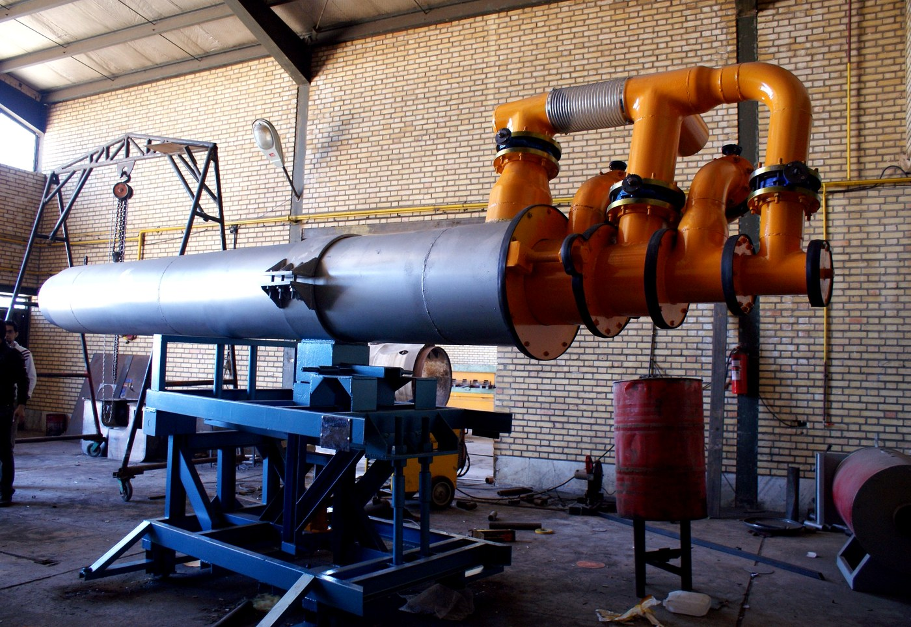
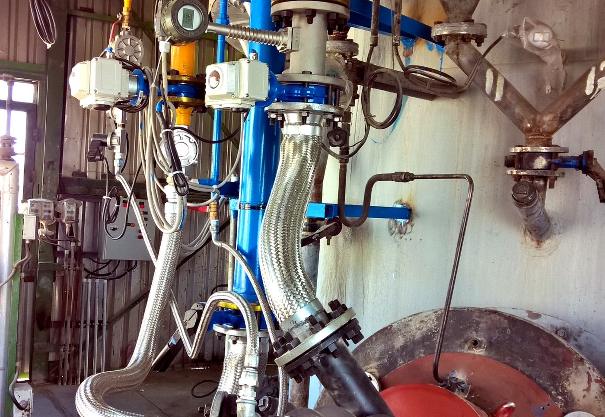

TAKSAM multi-core burner installed on rotary calciner kiln — Royal Shemsh Ferdoosمشعل چند هستهای تکسام نصبشده روی کوره دوار کلسینر — Royal Shemsh Ferdoos

TAKSAM multi-core cement burner under workshop assemblyمشعل چند هستهای سیمان تکسام در مرحله مونتاژ کارگاهی
Direct hot-air furnace / dryer heating equipmentکوره هوای گرم مستقیم و تجهیزات گرمایش خشککنNormal-to-high-velocity silicon carbide burner units manufactured by TAKSAMسری تولیدی مشعلهای سیلیکون کارباید تکسام از سرعت معمولی تا سرعت بالا

TAKSAM vertical-lime gas burner and modern instruments installed in Toose Neyshekar, Farabi Sugar Plantمشعل گازی آهک عمودی و ابزار دقیق مدرن تکسام نصبشده در توسعه نیشکر، کارخانه قند/شکر فارابیFirst pre-combustion flame of a TAKSAM rotary-kiln gas burner, innovated for 2,200°C sintering heat zone — Tiva Sanat Mahanاولین شعله پیشاحتراق مشعل گازسوز کوره دوار تکسام، نوآوریشده برای ناحیه تفجوشی ۲۲۰۰ درجه — تیوا صنعت ماهانSCADA/HMI monitoring and field-control installationمانیتورینگ SCADA/HMI و نصب کنترل میدانیPLC/control cabinet wiring and automation interfaceتابلوی PLC و رابط اتوماسیونTAKSAM PLC-based switch board and gas water-bath heaterتابلوی سوئیچ مبتنی بر PLC تکسام و گرمکن حمام آب گازTAKSAM boiler control and management system (BMS) — Gas Carbonic Gharbسیستم مدیریت و کنترل بویلر تکسام (BMS) — گاز کربنیک غربTAKSAM multi-fuel burner for superheated steam boiler installed in Naghdeh Sugar Plantمشعل چندسوخته تکسام برای بویلر بخار سوپرهیت نصبشده در کارخانه قند نقدهField control box mounted on thermal equipmentتابلوی کنترل میدانی نصبشده روی تجهیزات حرارتیTAKSAM SCADA/BMS combined three superheated-boiler control station installed in Bistoon Sugar Plantایستگاه کنترل SCADA/BMS تکسام برای سه بویلر سوپرهیت نصبشده در کارخانه قند بیستون